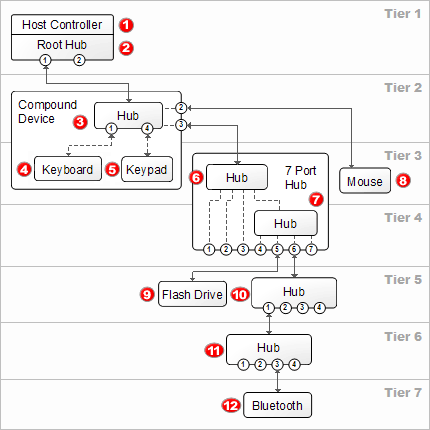

Universal Serial Bus
Prior to the development of the Universal Serial Bus, or USB, the world of computer cables was in many ways similar to the Wild West. Each major player within the Computer Manufacturing Industry seemed to have developed or at least trademarked their own proprietary data storage cable. Wires with broken pins and Wires splintered into kinks lied by the side of the road silently breathing their last. PS/2 Cables dominated smaller peripherals but could hardly compare to the Serial or PATA cables in terms of throughput. But in 1994, the major players of the Computer World at the time, namely Compaq, Digital Equipment Corporation (DEC), IBM, Intel, Microsoft and NEC, put their minds and resources together to forge a new force in the cabling world. A fast, reliable, and universal method of data transfer. Two years later, in 1996, the cabal of minds behind this new initiative published what they humbly referred to as the Universal Serial Bus, or USB 1.0.
In true computer industry fashion, the original specification, USB 1.0, was architecturally deficient, and lacked significant functionally that was requisite of any consumer focused data transfer cable to hit the market. USB 1.0 was not extensible, would not support extension cables, and prohibited pass-through monitors. Due to issues in signal interference, and limited electrical capacity, USB 1.0 was, while a solid cable, ultimately a poor attempt at creating the next industry-setting standard. Due to these huge flaws, USB would not be adopted for another several years, however the original specification of USB made huge leaps and innovations not previously present in the cabling industry. USB 1.0 featured both a high and low speed options, with low speed (appr. 1.5Mbps) reserved for low input, low power requirement devices, like keyboards, mice, or other peripherals. High speed USB 1.0, clocking in at 12Mbps, was intended to be used for disk drives, and higher input, high power consumption uses.
USB 1.1 hit in 1998, fixing many of the initial issues that USB 1.0 was weighed down by. By providing higher power conductivity, USB 1.1 allowed for extension cabling and faster throughput to push the USB cable to the forefront of the cabling industry, and to a place where it was competitive was its contemporaneous rivals. These updates allowed USB 1.1 to take a dominant portion of the market share for consumer electronics cables, and even allowed it be begin to be introduced into a corporate environment, with entire companies partnering with USB for all their production and manufacturing needs.
The specification for the following iteration of the USB protocol, specifically the ubiquitous USB 2.0 was published in 2000. USB 2.0 made two great leaps and advances over the prior iterations of data transfer cables and over its prior generation of cabling. The first and most ground-breaking change was a 40x throughput increase, increasing the maximum theoretical throughput of the USB cable from a meagre 12Mbps to a (at the time) speedy 480 Mbps. This major leap in the speed and capability of the USB cable allowed for a massive increase in the popularity and user adoption rate for the USB cable. While USB had achieved significant success in its second iteration, USB 2.0 pushed the USB cable to the forefront of the cabling industry and allowed it to be a major contender for data transfer needs. Perhaps more importantly, however, was the decisions to allow USB 2.0 to be both backwards and forwards compatible with USB 1.1 cabling. Unlike the pin cables of the past, the USB 1.1 and USB 2.0 head connectors were identical in physical form, and allowed for users with USB 1.1 peripherals and cables, or even USB 1.1 Hubs to be able to take full advantage of the USB 2.0 functionality. Obviously, this created a significant speed bottleneck is some high-data use peripherals, such as web cams, but the design decision allowed for users who invested in USB 1.1 to have some return on their investment when the latest iteration of USB was pushed to the market.
USB 2.0 lead the forefront of the cabling industry for eight years, a veritable lifetime in the Computer Industry, but as time pressed onward, and hard drives moved from Megabytes to Gigabytes, to Terabytes, and peripherals demanded higher and higher I/O rates and lower latency, even the ground break 480Mbps began to falter, allowing USBs competitors, namely the eSATA cabling to begin to gain ground. The USB Collective responded in 2008 with the next generation of the USB Cable: USB 3.0. USB 3.0, dubbed "Super Speed" provided leaps in the speed of the USB cabling, namely an 8x increase in throughput, to 5Gbps, however it achieved it in a new manner. USB 3.0 features two sets of the archetypal USB pins, allowing it to act as a full-duplex USB 2.0 cable, allowing it to not only vastly increase the speed but also reduce data transfer time, and thus power consumption. However, beyond even the increase in speed, USB 3.0 also allowed for backwards compatibility to both USB 2.0 and USB 1.1 generation cables, allowing the dominant cable for much of the 2000s to be compatible with upgraded, faster, more efficient USB 3.0 hubs. While USB 2.0 and 1.1 cables are still bottlenecked by their inherent throughput capabilities, the increased speed of the USB 3.0 hub allowed for standard peripherals to be used alongside the latest and greatest products of the computer industry
Alongside the release of USB 2.0, the USB Coalition also published specifications for a new project: The USB Mini Micro. Taking advantage of the USBs capabilities as a battery charging cable as well as its potential for data transfer, the USB Coalition saw an opportunity to provide a universal charging data cable for mobile devices, a field long occupied by proprietary cable after proprietary cable. Published alongside USB 2.0 in 2000, Mini projects allowed for mobile devices to have the same benefit garnered from a Universal Cabling system that PCs did.
Yet as with USB 1.1 the USB Mini was not without its shortcomings. Specifically, the USB mini suffered from crippling dependability issues, rendering its durability quite low. USB responded in late 2008 with the USB Micro, a thinner, more durable alternative to the USB mini, which subsequently, in 2009, deprecated the USB Mini Completely. Similar in many regards to the original USB protocol, the USB Micro and Mini were divided into A and B components, however with the release of the USB 3.0 Specification, the USB Micro A and USB Micro B were merged into a new format, the Micro AB, providing for true universal support for all cellular devices, including deprecated Micro A and Micro B connectors.
One notable difference between the two implementations, however, is the addition of a fifth pin in the USB mobile device connectors. This pin, referred to as the ID pin, and was added as a way to differentiate the A & B connectors. In the USB Micro A, the ID pin is grounded, and in the USB B pin, the pin is floating, providing a clear and concise deterministically efficient way to differ the two devices with similar form factors.
Yes USB cords for mobile devices are far from the only optimizations that the USB Coalition has added to the USB cables over the years of its evolution. Two such features added to the USB cabling architecture over the years are the USB Wireless Program and the USB “On the God” program.
The USB Wireless program is a transmission specification released during the USB 2.0 lifespan, providing a short-range, high speed transmission protocol. Juxtaposed against the typical 802.11a/b/g/n transmission protocols, USB Wireless feature much higher transmission rates, but a much smaller transmission space. Able to transmit up to 480 Mbit/s at the 3 meter range, and 110 Mbit/s at the 10 meter range, as well as being far less power hungry than the archetypal wireless transfer methods of comparable range and speed. This enhancement to the USB protocol, allowed for the USB coalition to expand past the physical cabling market and begin to take market share in the wireless market. While USB Wireless is not widely used today, it still remains a viable alternative for wireless data transfer.
The second specification improvement made to the USB specification over its evolution, named “USB On the Go” was implemented shortly after the USB Wireless program. USB On the Go allowed for USB Devices to communicate without an intrinsic USB Root Hub or Host to facilitate communication. This improvement greatly improved the flexibility and mobility of USB devices, and allowed USB peripherals to communicate directly with each other, freeing up throughput to use for system integral communications.
So, how does the USB network function? USB is based upon a host/hub/leaf relationship. A USB network starts with a USB Host, which is typically installed on the motherboard of a given computer, or implemented as a PCI-E extension card, plugged directly into the motherboard. This USB host acts as the basis and genesis for all connections generated from its children. The Host than connects a series of Hubs, allowing the main USB channel to be split into multiple paths, thus allowing for the integration of multiple USB devices. Finally, USB Hubs can than connect to additional USB hubs, or USB peripherals, defined as leafs, or end-points for the network. USB allows for a depth of 7, allowing for branches of the tiered network to extend seven connections deep from the USB hub before the connection is no longer sustainable. This architecture allows for a theoretical limit of 127 USB devices per USB Host, though limitations in throughput and power consumption would prevent that from becoming a reality in the current generation of USB products.

Example USB Physical Topology
However, while the physical topology of the USB architecture is a tiered star, the networking topology, and the way that USB communicates to its peripherals is different. Within its design parameters, USB treats every peripheral, and hub, at tier 2 or tier 7 as adjacent to the Root Hub, creating an adjacent start topology. This allows for the Root Hub to communicate directly with all connected Hubs and Peripherals, allowing for a highly modular and extensible logical architecture. The system does cache the physical topology as well, to allow for communication paths to be resolved, but within the logical branches of the system itself, that adjacent start topology is maintained.
Beyond even the network and physical topologies of the USB architecture, the USB cable itself is a highly complex and highly detailed arrangement. The USB head, also known as the USB Male or USB - A cable head, is a rectangular port, denoted by four metal pins. The outermost pins, denoted + and - allow for the USB cablings transfer of power to peripherals and to allow for a sustainable reliable connection. The innermost pins, marked D+ and D- allow for the transfer of Data. This connection Head can be inserted into a USB female A port on the host Hub, and used to transmit. Peripherals, however often come equipped with a different USB physical form, namely the USB B cable, a square form factor. Despite the change in shape however, the USB B behaves identically to the USB A, bearing four pins, arranged at the four corners of the square, with the right corners being the power pins and the left pins being tight data transfer pins.
With so many advances in the USB Architecture over its life cycle, one must 0 Gbps inherently wonder where the USB cable could evolve from here. In the short term, the coalition behind the USB cable is currently preparing the USB 3.1 Specifications, which would allow the current USB 3.0 cable to effectively double its throughput to 10 Gbps through more efficient data encoding and data delivery. This will allow it to more effectively compete with alternative cabling options such as the modern Thunderbolt and eSata 3.0 cable options.
In the long term however, the USB is more obfuscated. USB is notable for being one of the few remaining copper snakes still mass produced, and with the efficiency and efficacy of the cost of copper plummeting with each passing day, it seems likely the a Fiber Optic interpretation of the USB cable is long overdue. Creating fiber optic cables with USB would allow them to have a much smaller form factor, and a greatly improved data transfer rate, yet would also likely come with a significant increase in power intake and cost. If the cost for fiber optic cables is prohibitive, however, we can expect to see the duplex of USB 3.0 being manipulated alongside an improvement in cable shielding (preventing data interference) to allow and even greater degree of parallel data processing and transfer, likely moving to a quadrilateral data transfer. Of course, as the channels increase, so do does the form factor and copper cost of each cable, and the speed up independent of improvements of data packing or processing, would simply be a linear curve and eventually find a maximum efficacious return on any investment in adding more channels.
[QUIZ]
Q: How Was USB 3.0 Able To Increase Throughput over USB 2.0 While Maintaining Backwards and Forwards Compatibility?
A: USB 3.0 Was able to increased Throughput over USB 2.0 through the addition of four additional pins in USB Cable Head, allowing for the cable to have a full duplex, allowing for the same form factor to facilitate and transfer significantly more information
Q: What Problems Was USB Meant To Solve?
A: USB was designed and created to provide a cheap, power conserving, and reasonably fast alternative to the mountains of proprietary cables and high-power cost cabling that marked the computer industry before USBs introduction.
Q: What Issues Plagued the Original Iteration of the USB Cable
A: The original USB implementation, USB 1.0, suffered from an inability to have either extension cables due to problems with low power capacitation and signal interference.
[Citations]
http://www.usb.org/developers/usb20/developers/whitepapers/usb_20g.pdf